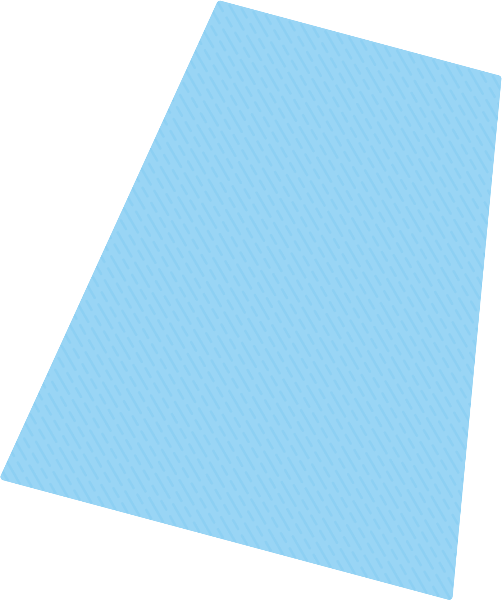
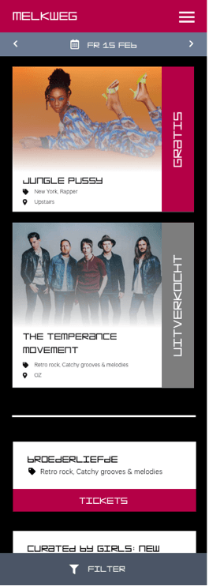
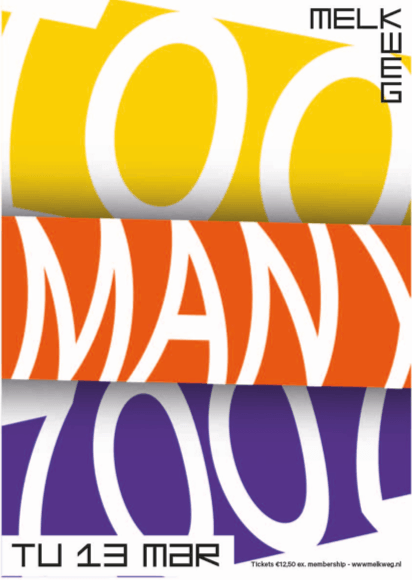
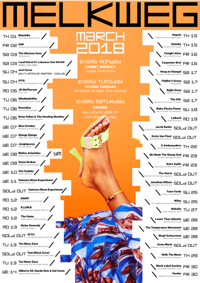
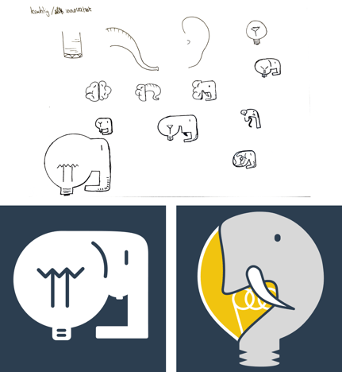

Vak
Project visual
Project Visual bereidt je voor op de diversiteit van de beroepspraktijk van Visual Design. Binnen Project Visual werk je binnen een studiosetting aan een veelvoud van praktische ontwerpopdrachten. De projecten variëren van kortlopende productgerichte opdrachten, tot langer lopende complexe opdrachten. Doordat het complete ontwerpproces wordt doorlopen, er veel ruimte is voor expert-coaching en er kennis en methodieken worden aangereikt, worden alle ontwerpcompetenties ondersteund en versterkt.
Leerjaar 2, blok 3
Periode
Visual design
Categorie
Sketch, Photoshop, Illustrator
Tools
Project Visual




Elephant browser logo
Een fictieve browser genaamd Elephant. Het ontwerpproces startte door twee visies te verzinnen die deze fictieve browser zou kunnen hebben. Neem bijvoorbeeld Firefox, Krachtig en snel. Door zelf kernwaarden te verzinnen voor een logo, zet je jezelf een aantal randvoorwaarden vast.
Een fictieve browser genaamd Elephant. Het ontwerpproces startte door twee visies te verzinnen die deze fictieve browser zou kunnen hebben. Neem bijvoorbeeld Firefox, Krachtig en snel. Door zelf kernwaarden te verzinnen voor een logo, zet je jezelf een aantal randvoorwaarden vast.
Melkweg agenda redesign
Op het eerste gezicht is er niks mis met de agenda van de Melkweg. Maar wanneer je een beetje de tijd neemt om te bedenken wat er beter kan wordt het vanzelf duidelijk dat het op een aantal plaatsen toch wat minder goed gaat. Door elementen stuk voor stuk te ontleden en vervolgens ieder onderdeel van de website, dus header, afbeelding, titels, buttons etc. te heroverwegen kom je tot een nieuw, overzichtelijk en ruimer opgezet ontwerp waar acts die meer exposure moeten krijgen, groot neergezet worden en acts die minder belangrijk zijn iets verder naar beneden worden geplaatst.
Op het eerste gezicht is er niks mis met de agenda van de Melkweg. Maar wanneer je een beetje de tijd neemt om te bedenken wat er beter kan wordt het vanzelf duidelijk dat het op een aantal plaatsen toch wat minder goed gaat. Door elementen stuk voor stuk te ontleden en vervolgens ieder onderdeel van de website, dus header, afbeelding, titels, buttons etc. te heroverwegen kom je tot een nieuw, overzichtelijk en ruimer opgezet ontwerp waar acts die meer exposure moeten krijgen, groot neergezet worden en acts die minder belangrijk zijn iets verder naar beneden worden geplaatst.
Melkweg maand & band poster
Aan de hand van de design principes die de Melkweg heeft opgezet een poster maken die uniek genoeg is maar toch een melkweg uitstraling heeft.
Aan de hand van de design principes die de Melkweg heeft opgezet een poster maken die uniek genoeg is maar toch een melkweg uitstraling heeft.